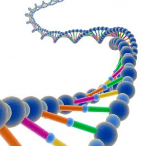

Convert 23 and Me Raw Data to VCF

Have you ever wanted to perform analysis on your 23 and Me data? Well the first step to do this consists of converting the raw output that they provide into a widely used format; in this case VCF. The VCF format enables you to use several tools to annotate each SNP with various meta information. You can use tools such as snpEff or even impute your data using the Sanger imputation server. I created an online web service that converts your raw 23 and Me data into the VCF format. It automatically detects the appropriate reference genome for you. There is also no issues with missing SNPs during the conversion process as the same reference genomes that 23 and Me use are used.
To get started, visit this page to convert your data: 23converter.tylermarrs.com.